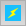
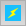

ChimeraX has an all-in-one window interface in which various panels can be shown, hidden, and repositioned. Panels can also be detached (undocked) from the main ChimeraX window and subsequently reinserted (docked). The overall window also contains the main window for 3D graphics, a title bar across the top, and a status line for transient messages across the bottom. At the bottom right are small icons:
 or 
- toggle main window between 3D graphics and Rapid Access
or 
- toggle main window between 3D graphics and Rapid Access
See also: windowsize, mousemode
A panel may include clickable icons (as in the Graphics Toolbar), interactive 2D representations such as histograms and network diagrams, or HTML with links and images (as in the Log and Help Viewer).
Panels are often tool interfaces, but may also appear as the result of a command (for example, contacts or help).
A tool can be shown by using the Tools menu or toolshed command, or by opening a certain type of data. For example, opening a density map starts Volume Viewer. A tool can be designated to “autostart” when ChimeraX is started, using the ui command or the context menu from right-clicking* within the tool panel.
*for Mac touchpad or single-button mouse, Ctrl-click replaces “right-click” for showing context menus
 on its title bar (if the panel is docked; a generic close-window button
if the panel is undocked) or by unchecking its name in the context menu
from right-clicking* any docked panel's title bar
on its title bar (if the panel is docked; a generic close-window button
if the panel is undocked) or by unchecking its name in the context menu
from right-clicking* any docked panel's title bar
 on its title bar or by dragging or double-clicking its title bar
on its title bar or by dragging or double-clicking its title bar
Icon toolbars and the Command Line lack their own title bars, but the other methods of control are still available. The overall window or any undocked panel can be resized by dragging any corner and moved by dragging its title bar. The boundaries between docked panels or between panel(s) and the main window can be dragged to expand one side and shrink the other while keeping the overall window dimensions the same. Finally, the overall window can be toggled to hide/show the current panels by clicking the “nested squares” button near its bottom right corner. This allows expanding the main window with a single click without losing the overall window configuration. Icon toolbars and the Command Line are excluded from this toggling.
Panel contents (away from the title bar) may have their own specific context menus.
The Help Viewer is a built-in HTML browser. ChimeraX help pages are written in HTML and can be shown in the Help Viewer by using the Help menu, the help command, tool context menus, and/or links in the Log. The Help Viewer opens as a separate window, but can be docked to and undocked from the main window like other panels, as described above. The name listed for the Help Viewer in panel title-bar menus will be the title of the HTML page it is showing. Buttons and context menus are provided for navigation (back, forward, reload) and adjusting the font size, and there is a field for entering search text.
An important advantage of the built-in browser is that it provides a simple mechanism to execute ChimeraX commands by clicking special links, for example:
open 1gcn
– encoded as –
<a href="cxcmd:open 1gcn">open 1gcn</a>
** The execution links will only work in the ChimeraX browser, however, not other web browsers.**
With this mechanism, it is easy to create web pages that use ChimeraX for structure display and other features, as in a scientific presentation or ChimeraX tutorial. The Quick Start Guide includes many more examples, as well as some javascript to display a brief explanation if such a link is clicked when the page is being viewed in some other browser. This javascript can be copied from the page source and used in other pages with the special links, as desired.
Web content and HTML files in general (with or without the special command-execution links) can be shown in the ChimeraX browser with commands:
open URLLocal files can also be opened with File... Open in the menu.
– or –
open local-file.html